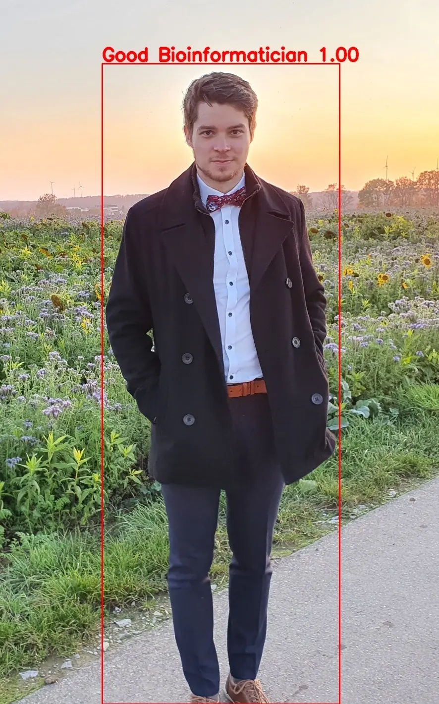
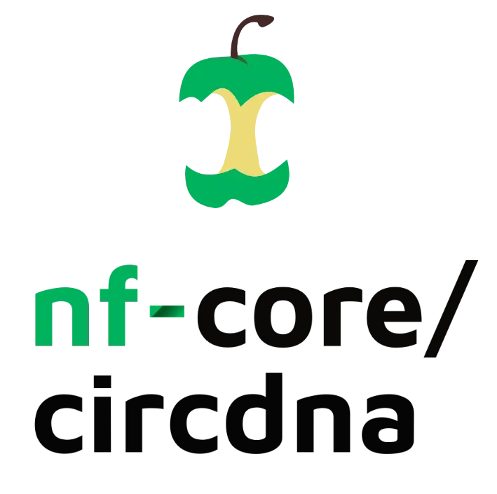
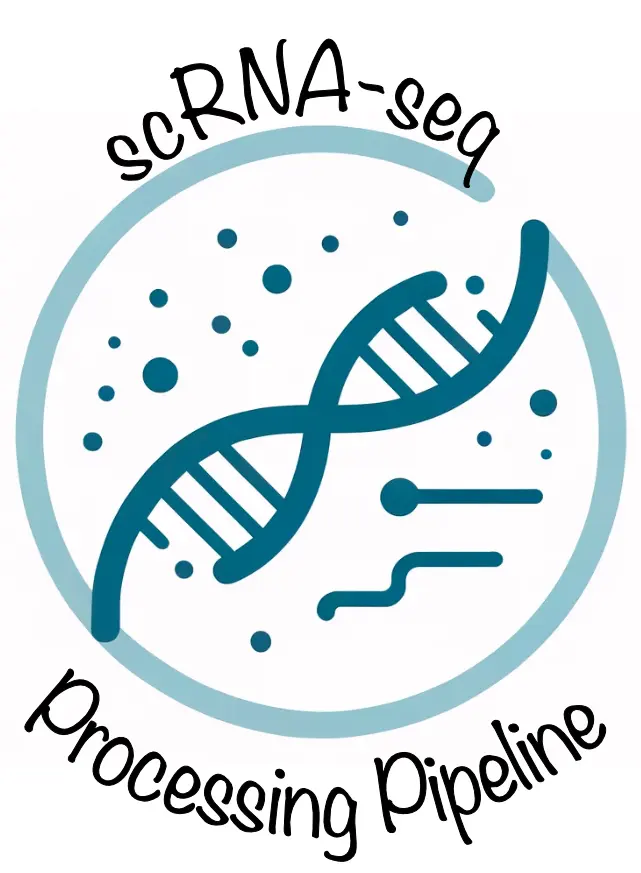

PhD in Computational Biology
Method-first mindset grounded in translational relevance.
Data Science · Oncology · Pharma
I design scalable bioinformatics workflows and analytics solutions for pharma and translational research — with a focus on quality, reproducibility, and business-ready insights.

Senior Data Scientist (Pharma/Bioinformatics)
Fürth, Bavaria, Germany
Method-first mindset grounded in translational relevance.
Primary-author contribution in high-impact oncology research.
Comfortable across scientific depth and stakeholder alignment.
From raw data to decision-ready outputs.
I work at the intersection of data science, bioinformatics, and oncology-focused pharmaceutical development. My core work includes NGS analytics, clinical-trial data interpretation, and pipeline engineering for reliable high-throughput analysis.
With a PhD in Computational Biology and hands-on industry experience, I focus on building systems that are technically robust and practically useful for cross-functional teams.
Integrative analysis of transcriptomic and genomic datasets to support translational decisions and biomarker-oriented insights.
Reproducible, scalable workflows for high-throughput sequencing data with strong quality controls and clear reporting.
Data interpretation and communication tailored to regulated, multidisciplinary environments in pharma-facing projects.
Leading oncology-oriented analytics and pipeline initiatives for pharma use cases, including clinical data workflows and decision-ready reporting.
Delivered data-driven bioinformatics analyses in industry settings, connecting technical execution with practical business impact.
Investigated extrachromosomal circular DNA (ecDNA) in pancreatic cancer and contributed to high-impact translational research.

Featured Case Study
Production-grade Nextflow pipeline for ecDNA analysis from high-throughput data.
Problem:
Clinical and transcriptomic signals are hard to explore together.
Outcome:
Interactive exploration of cohorts with clinical context for faster hypothesis testing.

Problem:
Single-cell workflows often break reproducibility across environments.
Outcome:
Automated, analysis-ready outputs with consistent processing across runs.
How I structure delivery from problem framing to reproducible outcomes.
1. Problem framing
Define decision scope and relevant clinical/biological variables.
2. Data + workflow
Build reproducible analysis path with quality checks and interpretable outputs.
3. Outcome
Deliver findings that are traceable and directly usable by cross-functional teams.
1. Problem framing
Stabilize inconsistent multi-step processing across environments and runs.
2. Data + workflow
Implement modular workflow blocks with explicit configuration and logging.
3. Outcome
Consistent analysis-ready outputs and lower operational friction for downstream work.
Peer-reviewed work in cancer genomics and translational bioinformatics.
Demonstrates how ecDNA amplifications drive tumor heterogeneity and adaptive behavior in pancreatic cancer.
First-author contribution focused on cancer genomics methodology and analytical interpretation.
Second-author contribution supporting robust translational analysis in oncology research.
This page provides a focused overview of my background, expertise, and selected work in oncology data science and bioinformatics.
Profile overview, selected work, and publication highlights in oncology data science and bioinformatics.